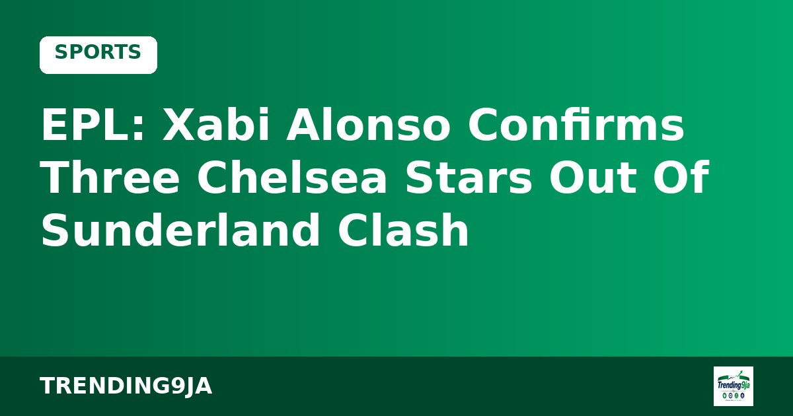
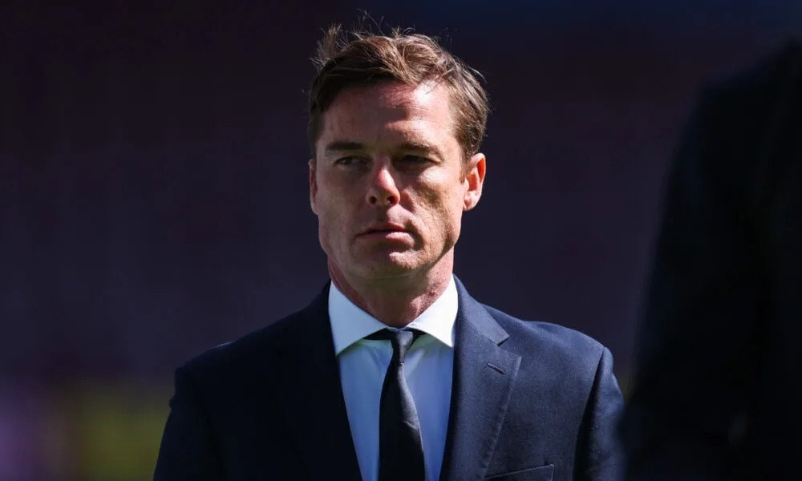

West Ham Appoint Former Captain Scott Parker as New Head Coach
West Ham United have named ex-captain Scott Parker as head coach on a two-and-a-half-year deal following the departure of Nuno Espírito Santo.

Chelsea head coach Xabi Alonso has confirmed that three squad members will be unavailable for Sunday's Premier League fixture against Sunderland at the Stadium of Light, according to Punch.
Speaking during Friday's pre-match briefing, Alonso revealed that Jorrel Hato, Maxence Lacroix, and Joao Pedro are ruled out of the contest. Chelsea are aiming to build on their previous league win against Manchester United at Stamford Bridge. Alonso stated that Hato still requires several weeks of recovery and might only return following the upcoming international window.
The Spanish coach mentioned that the team will monitor the progress of the injured trio over the two-week international break. Detailed updates regarding their condition will be shared ahead of Chelsea's subsequent fixture against Leeds United.
Meanwhile, goalkeeper Emiliano Martinez could return to action after undergoing surgery for a jaw issue sustained during Chelsea's win over Everton. Martinez has resumed work on the pitch while wearing protective headgear. Alonso noted that a final decision on the goalkeeper's inclusion will be made after Saturday's practice session at Cobham.
Martinez's potential availability creates a selection choice for the manager, given that Mike Penders has deputized in goal for Chelsea's past three games during the Argentine's absence.
Alonso also addressed the status of midfielder Moises Caicedo, who suffered discomfort following their last match and missed earlier training sessions. The manager explained that Caicedo's condition, which involves more than just his calf, will be re-evaluated on Saturday ahead of the Sunday fixture.
Sources: Punch
← More Sports stories
West Ham United have named ex-captain Scott Parker as head coach on a two-and-a-half-year deal following the departure of Nuno Espírito Santo.

Al-Nassr secured a 6-2 victory against Pakhtakor in the AFC Champions League Elite on Monday, playing without Cristiano Ronaldo who was rested alongside other key stars.

Venezuela coach Dayana Frías acknowledged that a late error cost her side a 1-0 loss to Nigeria's Flamingos in the 2026 U-17 Women's World Cup quarter-finals.
Nigeria's trending news, politics and entertainment, straight to your email.
By subscribing you agree to our Privacy Policy. Unsubscribe any time.